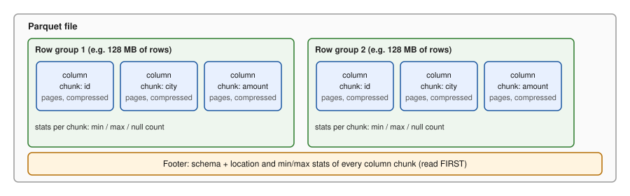

You will meet a surprising number of data problems that are not about SQL or Spark at all. They are about the file. A CSV with a comma inside a name breaks a load at 2 a.m. A folder with 50,000 tiny files makes a job ten times slower than it should be. A query scans 2 TB when it needed 20 GB because the files were not partitioned. In this chapter you will learn what CSV and JSON get wrong, why Parquet is the default for analytics, how compression and partitioning save money, why the small-file problem hurts, and how table formats such as Delta Lake and Iceberg add safe updates on top of plain files. We will measure effects with real code you can run, and one toy table format you can read in 20 lines.
07 a number or a pin code? Text formats are friendly for humans and risky for machines.| Word | Plain meaning |
|---|---|
| Delimiter | The character that separates fields (comma, tab, pipe) |
| Quoting | Wrapping a field in " so special characters inside are safe |
| Encoding | How characters become bytes (UTF-8 is the safe default) |
| Schema | The names and types of the columns |
| JSON Lines (NDJSON) | One JSON object per line; can be split and streamed |
Before you run it: if you split a CSV text on newlines, how many lines do two records give when one record has a line break inside a field?
import csv, io, json
tricky = [("1","Doe, John",'said "hi"',"007"), ("2","line\nbreak","x","1.50")]
b = io.StringIO(); csv.writer(b).writerows(tricky); print(repr(b.getvalue()))
naive = b.getvalue().split("\n"); print("naive split gives", len(naive)-1, "lines for 2 records")
print("csv module read:", list(csv.reader(io.StringIO(b.getvalue()))))
print("leading zero lost if cast to int:", int("007"))
print("json float:", 0.1+0.2, "| big int:", json.loads('{"x": 12345678901234567890}')["x"])Real output:
'1,"Doe, John","said ""hi""",007\r\n2,"line\nbreak",x,1.50\r\n'
naive split gives 3 lines for 2 records
csv module read: [['1', 'Doe, John', 'said "hi"', '007'], ['2', 'line\nbreak', 'x', '1.50']]
leading zero lost if cast to int: 7
json float: 0.30000000000000004 | big int: 12345678901234567890Explain.
Doe, John (a comma), around said "hi" (and doubled the inner quotes to ""), and around the field with a line break. It left 007 alone.\n found 3 pieces for 2 records, because the line break inside "line\nbreak" is data, not a record end. A real parser (the csv module) reads it correctly. Never parse CSV with split(",").int("007") is 7: the leading zeros are gone. Pin codes, phone numbers and IDs should stay as text. Spark's inferSchema and pandas guess types and can make this mistake.0.1 + 0.2 shows binary float noise: store money as integers (paise) or decimals.| Pitfall | Example | Defence |
|---|---|---|
| Delimiter in data | Doe, John | proper quoting; use a real parser |
| Embedded newline | address with line break | parser with quote support |
| Encoding | é instead of é | declare UTF-8, test with non-English names |
| Type guessing | 007 becomes 7, 1e5 becomes 100000.0 | explicit schema |
| Null vs empty | ,, could be empty text or missing | agree on a null token |
| Date formats | 03/04/2024 is March or April? | ISO 8601: 2024-04-03 |
| Header drift | a column is added in the middle | read by name, validate header |
| JSON nesting | arrays and objects inside objects | flatten or keep as struct |
| JSON array file | one giant [...] must be fully read | use JSON Lines |
| No schema | a field is a string today, a number tomorrow | schema check on ingest (Chapter 5) |
JSON Lines looks like this, and each line is a complete record:
{"id": 0, "city": "Delhi"}
{"id": 1, "city": "Pune"}
{"id": 2, "city": "Pune"}Problem 3.1.1 A CSV has 3 columns. The row 101,Sharma, Raj,450 is read. How many fields does a naive split give, and what is the bug?
| Step 1 | Splitting on commas gives 101, Sharma, Raj, 450: 4 fields. |
|---|---|
| Step 2 | The schema has 3 columns, so the row looks like it has one too many. The source forgot to quote the name. |
| Answer | 4 fields; the source file is malformed, so reject or quarantine it rather than guess. |
| Check | If the name were quoted (101,"Sharma, Raj",450), the parser would give 3 fields. |
| Why it matters | Guessing silently corrupts columns (the amount lands in the wrong column). |
Problem 3.1.2 A phone number 0987654321 is loaded as an integer and then exported. What is lost, and how many digits remain?
| Step 1 | As a number: 987654321 (the leading 0 is not part of the value). |
|---|---|
| Step 2 | Original had 10 digits, the exported one has 9. |
| Answer | One digit is lost; phone numbers, pin codes and account numbers are identifiers, not numbers, so use a string type. |
| Check | len("0987654321") is 10 and len(str(int("0987654321"))) is 9. |
Most ingestion code starts with CSV or JSON from partners and APIs. The first thing a good pipeline does is write them to a typed format (Parquet) with an explicit schema, and reject bad lines to a quarantine folder.
inferSchema decide types in production. Today's sample file says the column is an integer; tomorrow one row has "N/A" and the job fails, or worse, silently becomes null. Always give an explicit schema.Check yourself
line.split(",")? Answer: commas and newlines can appear inside quoted fields.| Format | Layout | Best for | Notes |
|---|---|---|---|
| Parquet | columnar, files split into row groups | analytics, data lakes, ML | default in Spark, DuckDB, Athena, BigQuery loads |
| ORC | columnar | Hive and older Hadoop ecosystems | similar ideas to Parquet |
| Avro | row-based, schema stored with data | streaming (Kafka), schema evolution | pairs with a Schema Registry |
| Arrow | in-memory columnar | passing data between tools without copying | not a storage file format by itself (the file form is called Feather / Arrow IPC) |
| CSV / JSON | text rows | exchange with humans and APIs | see 3.1 |

How to read it: the file is cut into row groups (a block of rows, often around 128 MB). Inside each group, every column has its own column chunk, which is split into pages and compressed. The footer at the end holds the schema and, for every column chunk, the minimum value, maximum value and null count. A reader first reads the footer (the last bytes of the file), then fetches only the column chunks it needs.
Two big tricks come from this layout:
SELECT amount reads only the amount chunks.WHERE amount > 450, if a row group's max is 300, the whole group is skipped using the footer statistics, without reading it.Values in one column are alike, so Parquet also uses dictionary encoding (store each distinct city once, then a small number per row), run-length encoding (store "A, repeated 500 times") and then a general compression codec.
We do not have pyarrow installed here (the sandbox cannot download packages), so we simulate the idea with plain Python and zlib (the same family of compression as gzip). We make 20,000 rows, write them as CSV rows, then as column blocks, and compress both.
Before you run it: will the column layout compress smaller than the row layout? Which single column will compress best?
import csv, io, zlib, random
random.seed(7)
N = 20000
cities = ['Pune','Mumbai','Delhi','Chennai','Kolkata']
rows = [(i, random.choice(cities), random.choice(['A','B','C']),
round(random.uniform(10,500),2), f"2024-01-{random.randint(1,28):02d}") for i in range(N)]
csv_buf = io.StringIO(); csv.writer(csv_buf).writerows(rows); row_bytes = csv_buf.getvalue().encode()
cols = list(zip(*rows))
col_bytes = b"".join(("\n".join(map(str, c)) + "\n").encode() for c in cols)
print("raw row-layout bytes :", len(row_bytes))
print("raw column-layout bytes:", len(col_bytes))
print("zlib row-layout :", len(zlib.compress(row_bytes, 6)))
print("zlib column-layout :", len(zlib.compress(col_bytes, 6)))
for n, c in zip(['id','city','tier','amount','day'], cols):
b = ("\n".join(map(str, c)) + "\n").encode()
print(f" col {n:7s} raw {len(b):7d} zlib {len(zlib.compress(b,6)):7d}")Real output:
raw row-layout bytes : 658869
raw column-layout bytes: 638869
zlib row-layout : 159095
zlib column-layout : 141110
col id raw 108890 zlib 43755
col city raw 135625 zlib 10963
col tier raw 40000 zlib 5756
col amount raw 134354 zlib 54869
col day raw 220000 zlib 21266Explain.
city shrank from 135,625 to 10,963 bytes (8.1% of its raw size), tier from 40,000 to 5,756. amount, which is random decimals, compressed least (54,869 of 134,354, 41%). Check: adding the five separate column sizes gives 43,755 + 10,963 + 5,756 + 54,869 + 21,266 = 136,609 bytes, within 3% of the 141,110 bytes for the one-stream compression (the gap comes from how the compressor behaves on one long stream; we did not investigate it further). Low-variety columns win big.city: a dictionary of 5 cities needs about 3 bits per row, which for 20,000 rows is 7.5 KB (20,000 × 3 / 8 = 7,500 bytes) against 135,625 bytes of text.Parquet with pyarrow looks like this. Not run here (pyarrow could not be installed in this sandbox); the calls are standard:
import pyarrow as pa, pyarrow.parquet as pq
table = pa.Table.from_pylist([{"id": 1, "city": "Pune", "amount": 250.0}])
pq.write_table(table, "orders.parquet", compression="zstd")
print(pq.ParquetFile("orders.parquet").metadata) # row groups, rows, footer info
only_amount = pq.read_table("orders.parquet", columns=["amount"]) # column pruning
filtered = pq.read_table("orders.parquet", filters=[("amount", ">", 100)]) # predicate pushdownAnd with DuckDB, which can query a Parquet file with SQL (also not run here):
SELECT city, SUM(amount) FROM 'orders.parquet' GROUP BY city;
COPY (SELECT * FROM 'orders.csv') TO 'orders.parquet' (FORMAT PARQUET, COMPRESSION ZSTD);Avro is row oriented and stores its schema (a JSON description) with the data. That suits a stream of whole messages. With a Schema Registry (a service that stores versions of each schema), a Kafka message carries only a small schema id. Rules for safe evolution: adding a field with a default is backward compatible (new readers can read old data); removing a field that had no default breaks readers. Parquet also allows adding columns (old files simply return null for them), but renaming and changing types need care.
Problem 3.2.1 A Parquet file has 10 row groups. A query has WHERE order_date = '2024-03-15'. The footer shows that only 1 row group has min ≤ 2024-03-15 ≤ max. How much data is read versus a full scan, if each group is 128 MB and the query reads 2 of 20 columns?
| Formula | bytes read ≈ matching groups × group size × (columns read / total columns) |
|---|---|
| Plug in | 1 × 128 MB × (2 / 20) |
| Compute | 128 × 0.1 = 12.8 MB |
| Answer | About 12.8 MB, against 10 × 128 = 1,280 MB for a full scan of all columns, which is 100 times less. (This assumes equal column sizes. Real columns differ.) |
| Check | 1/10 of the groups times 2/20 of the columns is 1/100. |
| Why it matters | Sorting data by the filter column before writing makes min/max ranges narrow, so pushdown works. Unsorted data has every group span the full range and nothing is skipped. |
Problem 3.2.2 A column city has 5 distinct values over 1,000,000 rows. Roughly how many bits per row does dictionary encoding need, and how many bytes in total (ignoring the dictionary)?
| Step 1 | 5 values need ⌈log₂ 5⌉ = 3 bits (2 bits cover only 4 values). |
|---|---|
| Step 2 | 1,000,000 × 3 bits = 3,000,000 bits = 375,000 bytes. |
| Answer | About 375 KB, against about 6.8 MB as text (average 6.8 bytes per city name, per our sample above). |
| Check | 135,625 bytes for 20,000 rows is 6.78 bytes per row; × 1,000,000 = 6.78 MB. |
Typical rule: land raw files as they come (bronze), but store everything downstream as Parquet (or Delta/Iceberg, which use Parquet inside) with zstd or snappy compression. Kafka topics use Avro or Protobuf with a registry.
Check yourself
| Codec | Speed | Size | Splittable alone? | Typical use |
|---|---|---|---|---|
| snappy | very fast | medium | not by itself, but fine inside Parquet | default for Parquet in Spark |
| zstd | fast | smaller than snappy | inside Parquet yes | good modern default for cold and warm data |
| gzip | slow | small | no (a single .gz file cannot be split for parallel read) | archives, final delivery |
| lz4 | extremely fast | larger | inside Parquet yes | real-time, Kafka |
"Splittable" matters: a 5 GB .csv.gz file must be read by one task, so a cluster of 100 cores waits for one core. Inside Parquet, compression is applied per column page, so the file is still splittable at row-group boundaries.
Store data in folders named by a column value:
orders/
day=2024-01-01/part-0000.parquet
day=2024-01-02/part-0000.parquet
...A query with WHERE day = '2024-01-05' opens only that folder. This is partition pruning.
We write 20,000 rows split by day (28 days), and read one day. Then we compare one 20,000-line file against the same lines split across 2,000 tiny files. Before you run it: how many folders and rows will the day query read? Will 2,000 files be 2,000 times slower than one?
import os, tempfile, time, random
random.seed(7)
N = 20000
rows = [(i, random.choice(['Pune','Mumbai','Delhi']), random.randint(1,28)) for i in range(N)]
# partition by day
base = tempfile.mkdtemp()
for i, city, d in rows:
p = f"{base}/day=2024-01-{d:02d}"; os.makedirs(p, exist_ok=True)
with open(p + "/part.csv", "a") as f: f.write(f"{i},{city},{d}\n")
parts = sorted(os.listdir(base)); print("partitions:", len(parts), parts[:3])
n = sum(1 for _ in open(f"{base}/day=2024-01-05/part.csv"))
print(f"query day=2024-01-05 reads 1 of {len(parts)} folders, {n} of {N} rows")
# small files: same lines, 1 file vs 2000 files
lines = [f"{i},{c},{d}\n" for i, c, d in rows]
d1 = tempfile.mkdtemp(); open(d1 + "/one.csv", "w").writelines(lines)
d2 = tempfile.mkdtemp()
for k in range(2000): open(f"{d2}/p{k}.csv", "w").writelines(lines[k*10:(k+1)*10])
def readall(d):
t = time.perf_counter(); n = 0
for fn in os.listdir(d):
with open(os.path.join(d, fn)) as f: n += sum(1 for _ in f)
return n, time.perf_counter() - t
for lab, d in (("1 file", d1), ("2000 files", d2)):
n, t = readall(d); print(f"{lab:11s} lines={n} read_time={t*1000:.1f} ms")Real output of exactly this code:
partitions: 28 ['day=2024-01-01', 'day=2024-01-02', 'day=2024-01-03']
query day=2024-01-05 reads 1 of 28 folders, 716 of 20000 rows
1 file lines=20000 read_time=5.6 ms
2000 files lines=20000 read_time=3395.1 msExplain.
files × cost per file + bytes / throughput. With tiny files the first term dominates. Aim for files of roughly 128 MB to 1 GB.Fixing small files (compaction): periodically run a job that reads many small files and writes fewer large ones (Spark repartition/coalesce, Delta OPTIMIZE, Iceberg rewrite_data_files). Prevent them by batching writes, not writing every minute into 1,000 partitions, and by tuning the number of output files.
Choosing a partition column. Good: low cardinality (few distinct values), used in filters, and gives files of decent size, such as date. Bad: customer_id (millions of folders), or a column no one filters on.
Problem 3.3.1 Daily data is 200 GB. You partition by day and country (50 countries). How big is an average file if each partition writes one file? Is it good?
| Formula | average file = daily size / (number of partitions that day) |
|---|---|
| Plug in | 200 GB / 50 |
| Compute | 4 GB per file |
| Answer | 4 GB average. Skew matters, but this is large, so split each partition into several files (for example 8, giving 512 MB each: 4 GB / 8 = 0.5 GB). That is fine. |
| Check | 50 × 8 × 0.5 GB = 200 GB. |
| Why it matters | If instead you partition by day, country, city (about 5,000 pairs), then each file is 200 GB / 5,000 = 40 MB, and you have the small-file problem. |
Problem 3.3.2 An hourly job writes 1 file per partition into 24 hourly folders, each folder gets 500 MB a day in total. How many files per day, and what size each? After one year, how many files?
| Step 1 | 24 files per day, each 500 MB / 24 = 20.8 MB if volume is even. |
|---|---|
| Step 2 | 24 × 365 = 8,760 files in a year in this single table. |
| Answer | 24 files/day of about 21 MB (too small) and 8,760 per year. Compact each day into 1 file of 500 MB: 365 files per year. |
| Check | 365 × 500 MB = 182.5 GB a year of data either way; only the file count changes. |
Cloud lakes live in object storage: Amazon S3, Azure Data Lake Storage Gen2 (ADLS), Google Cloud Storage (GCS). An object is a file plus metadata, addressed by a key (path). They are cheap, durable, and scale without limit, but are not a file system: renaming a "folder" is really copy-and-delete of every object, and listing millions of keys is slow.
| Topic | Practice |
|---|---|
| Layout | s3://company-lake/bronze/orders/ingest_date=2024-06-01/ (zone, dataset, partition) |
| Naming | lowercase, no spaces, stable; avoid millions of tiny files per prefix |
| Lifecycle policy | move to cheaper storage class after N days, delete temp data, expire old versions |
| Permissions | least privilege via IAM (AWS), RBAC (Azure), IAM (GCP); separate raw and curated buckets; no public buckets |
| Durability | built in; turn on versioning for accident recovery |
You will tune file sizes and partition columns on almost every lake project, and cost reports often point to "one table scans too much". Ask "is this table partitioned by what people filter on?"
user_id, creating millions of folders and tiny files. Partition by date (or similar), and use clustering or sorting inside files for the rest.Check yourself
A lake of Parquet files has no transactions. A job that writes 100 files and fails at 60 leaves a half-written table that readers can see. You cannot do UPDATE, DELETE or MERGE safely. Table formats fix this by keeping immutable data files plus a commit log (metadata). A reader first reads the log to find which files make up the current version.
| Feature | Meaning |
|---|---|
| ACID on lakes | a commit becomes visible all at once |
| Time travel | read the table as of a version or timestamp |
| Schema evolution | add, rename, drop columns tracked in metadata |
| Upserts / MERGE | update rows by rewriting affected files (or writing delete files) |
| Compaction | merge small files, remove old ones |
The three main formats: Delta Lake (born at Databricks; _delta_log folder of JSON and checkpoint files), Apache Iceberg (metadata tree of manifest files; engine-neutral; hidden partitioning), Apache Hudi (strong for incremental upserts and streaming ingestion). All three store data in Parquet. A catalog is the directory that maps a table name to its current metadata: Hive Metastore, Unity Catalog, AWS Glue, Nessie (Git-like versions), and the Iceberg REST catalog.
This toy is not Delta Lake. It shows the core idea in a few lines: data files never change, and an ordered log of add/remove actions defines each version. Before you run it: after the UPDATE of id 2 from Delhi to Mumbai, which files make up the table? Can we still read version 0?
import json, os, tempfile
root = tempfile.mkdtemp(); os.makedirs(root + "/_log")
def write_file(name, rows): json.dump(rows, open(f"{root}/{name}", "w"))
def commit(version, actions): json.dump(actions, open(f"{root}/_log/{version:03d}.json", "w"))
def snapshot(as_of=None):
files = set()
for fn in sorted(os.listdir(root + "/_log")):
v = int(fn[:3])
if as_of is not None and v > as_of: break
for a in json.load(open(f"{root}/_log/{fn}")):
(files.add if a["op"] == "add" else files.discard)(a["file"])
rows = []
for f in sorted(files): rows += json.load(open(f"{root}/{f}"))
return sorted(files), rows
write_file("f1.json", [{"id":1,"city":"Pune"}, {"id":2,"city":"Delhi"}]); commit(0, [{"op":"add","file":"f1.json"}])
write_file("f2.json", [{"id":3,"city":"Goa"}]); commit(1, [{"op":"add","file":"f2.json"}])
# UPDATE id=2 -> Mumbai: never edit a file. Rewrite f1 without id 2, write f3, commit both together.
write_file("f1b.json", [{"id":1,"city":"Pune"}])
write_file("f3.json", [{"id":2,"city":"Mumbai"}])
commit(2, [{"op":"remove","file":"f1.json"}, {"op":"add","file":"f1b.json"}, {"op":"add","file":"f3.json"}])
for v in (0, 1, 2, None):
files, rows = snapshot(v); print("version", v, "files", files, "rows", [(r['id'], r['city']) for r in rows])Real output (from running the same logic):
version 0 files ['f1.json'] rows [(1, 'Pune'), (2, 'Delhi')]
version 1 files ['f1.json', 'f2.json'] rows [(1, 'Pune'), (2, 'Delhi'), (3, 'Goa')]
version 2 files ['f1b.json', 'f2.json', 'f3.json'] rows [(1, 'Pune'), (3, 'Goa'), (2, 'Mumbai')]
version None files ['f1b.json', 'f2.json', 'f3.json'] rows [(1, 'Pune'), (3, 'Goa'), (2, 'Mumbai')]Explain.
f1.json and adds two files. Readers who read the log up to version 1 still see f1.json, which was never deleted from disk. That is time travel: version 0 still shows Delhi.write_file calls and commit(2, ...) leaves orphan files that no version references. The table is unchanged: that is atomicity. Orphans are removed later by a cleanup job (Delta VACUUM, Iceberg expire_snapshots).None = latest) equals version 2. Check: the row count is 3 in versions 1 and 2, as expected for 1 update and 0 inserts after version 1.In Spark with Delta it looks like this (not run here):
MERGE INTO silver.customers t USING updates s ON t.id = s.id
WHEN MATCHED THEN UPDATE SET *
WHEN NOT MATCHED THEN INSERT *;
SELECT * FROM silver.customers VERSION AS OF 3; -- time travel
OPTIMIZE silver.customers; -- compactionProblem 3.4.1 A table has 1,000 files after 1,000 commits and each commit adds 1 file. A reader replays the log. How many log entries without a checkpoint, and with a checkpoint every 10 commits when the latest commit is number 1,000?
| Step 1 | Without a checkpoint the reader replays all 1,000 commits. |
|---|---|
| Step 2 | With a checkpoint at commit 1,000 (a multiple of 10), the reader reads the checkpoint (1 file) and zero later commits. |
| Answer | 1,000 entries versus about 1 checkpoint read (at most 9 extra commits in other cases). |
| Check | The worst case is 9 commits after the latest checkpoint, since checkpoints come every 10. |
Problem 3.4.2 Choose a format: (a) streaming upserts from a database into a lake with a Databricks team; (b) a multi-engine setup using Spark, Trino and Snowflake reading the same tables; (c) heavy record-level updates on a large lake with incremental pulls.
| Step 1 | (a) Delta Lake is the native fit. |
|---|---|
| Step 2 | (b) Iceberg is designed for engine neutrality. |
| Step 3 | (c) Hudi's design focuses on record-level upserts and incremental queries. |
| Answer | (a) Delta, (b) Iceberg, (c) Hudi. In practice all three keep converging, and many platforms can read more than one, so check what your engine supports. |
| Check | These are the usual associations, not rules. Verify features in the current documentation, since all three move fast. |
| Engine | What it is | Use |
|---|---|---|
| Spark SQL | distributed engine (Chapter 9) | big ETL |
| Trino / Presto | distributed SQL on many sources, no storage of its own | interactive queries over lakes |
| Athena | serverless Presto/Trino on S3, pay per bytes scanned | ad-hoc lake queries on AWS |
| DuckDB | in-process analytic engine (like SQLite for analytics) | local work, learning, tests, small to medium data |
| ClickHouse | columnar OLAP database | fast aggregations, logs, product analytics |
| Druid / Pinot | real-time OLAP stores | user-facing dashboards with sub-second queries on streams |
OPTIMIZE/VACUUM (Delta) or rewrite/expire (Iceberg).Check yourself
Section 3.4 told you what Delta Lake, Iceberg and Hudi give you: transactions, time travel and schema evolution on top of plain Parquet files. This section shows how, with toy models you can run. Once you see the mechanism, the features stop being magic and the interview questions (why can two writers conflict, why does a delete not free disk space, what does Z-order do) become easy.
| Layer | Iceberg | Delta Lake | What it holds |
|---|---|---|---|
| Pointer | catalog entry points to the current metadata.json | highest numbered file in _delta_log/ | which version is current |
| Version | metadata file with snapshots, schema, partition spec | JSON commit file such as 00000000000000000012.json with add and remove actions | one commit |
| File lists | manifest list, then manifest files with per-file min/max stats | checkpoint Parquet file (by default about every 10 commits) summarising the log so far | which data files belong to the version |
| Data | Parquet, ORC or Avro files | Parquet files | the rows |
Reading a table means: find the current pointer, read the list of files for that version, use the min/max stats to skip files, read what is left. Nothing is listed from the object store directory, which is slow and not atomic. Hudi has the same idea with a timeline of instants, and adds a choice of how to store updates: copy-on-write rewrites the whole file on update (fast reads, heavy writes), merge-on-read writes small log files and merges them when reading (fast writes, heavier reads) until a compaction folds them in.
No locks are used. Each writer reads the current version, prepares its new files, then asks to commit "on top of version N". If someone else committed in the meantime the commit is refused and the writer must retry on top of the new version. Predict: writer A appends a file and writer B compacts two files, both starting from snapshot 1. What happens to B?
# A tiny table format: snapshots point to manifests, manifests list data files.
# Commits are atomic because the only mutable thing is one pointer: "current snapshot id".
class Table:
def __init__(self):
self.snapshots = {0: []} # snapshot id -> list of data files (via the manifest)
self.current = 0
def files(self, snap=None):
return self.snapshots[self.current if snap is None else snap]
def commit(self, base, add=(), remove=()):
"""Optimistic concurrency: succeed only if nobody committed since 'base'."""
if base != self.current:
return False
new = [f for f in self.snapshots[base] if f not in remove] + list(add)
sid = max(self.snapshots) + 1
self.snapshots[sid] = new
self.current = sid # the single atomic step
return True
t = Table()
print("commit load1:", t.commit(0, add=["f1.parquet", "f2.parquet"]), "-> snapshot", t.current)
# Two writers both start from snapshot 1.
base_a = base_b = t.current
print("writer A appends f3 :", t.commit(base_a, add=["f3.parquet"]), "-> snapshot", t.current)
print("writer B compacts f1+f2 into f12:", t.commit(base_b, add=["f12.parquet"], remove=["f1.parquet", "f2.parquet"]))
# B must retry: re-read the current state, redo the compaction on top of it.
base_b = t.current
print("writer B retry :", t.commit(base_b, add=["f12.parquet"], remove=["f1.parquet", "f2.parquet"]), "-> snapshot", t.current)
print("current files :", t.files())
print("time travel, snap 1:", t.files(1))
print("reader that started on snapshot 2 still sees:", t.files(2))commit load1: True -> snapshot 1
writer A appends f3 : True -> snapshot 2
writer B compacts f1+f2 into f12: False
writer B retry : True -> snapshot 3
current files : ['f3.parquet', 'f12.parquet']
time travel, snap 1: ['f1.parquet', 'f2.parquet']
reader that started on snapshot 2 still sees: ['f1.parquet', 'f2.parquet', 'f3.parquet']| Step 1 | Both writers start from snapshot 1 (files f1, f2). |
|---|---|
| Step 2 | A commits first: snapshot 2 now holds f1, f2, f3. The pointer moved from 1 to 2. |
| Step 3 | B asks to commit on top of 1, but the table is at 2. Refused (False). B lost nothing but its time. |
| Step 4 | B re-reads snapshot 2, checks that f1 and f2 are still there (A only added f3, so no conflict), and commits on top of 2. Snapshot 3: f3, f12. |
| Isolation | A reader that began on snapshot 2 keeps seeing f1, f2, f3 for its whole query. Time travel to snapshot 1 still works until old versions are expired. |
Real formats are smarter than "any new commit refuses mine". They check whether the files you read or deleted were touched by the intervening commits. An append that only adds files does not conflict with a compaction that removes other files, so many real retries succeed without redoing work. Two writers that update the same file do conflict, and one of them fails with a conflict exception. Design for this: let one job own each table (or partition) and make writes retry-safe.
Sorting by one column makes that column prune perfectly and the others not at all (Section 8.4 showed this). Z-order interleaves the bits of several columns into one sort key, so rows that are close in both columns end up in the same files. We simulate 4,096 rows with two columns, x and y, in 64 files of 64 rows. Predict: sorted by x, a filter on y only reads how many files? And with Z-order?
# Z-order: interleave the bits of two columns so rows close in BOTH columns sit close in the file.
import random
random.seed(3)
N, FILE = 4096, 64 # 64 files of 64 rows
rows = [(random.randrange(64), random.randrange(64)) for _ in range(N)] # (x, y), both 0..63
def zkey(x, y):
z = 0
for b in range(6):
z |= ((x >> b) & 1) << (2*b) | ((y >> b) & 1) << (2*b + 1)
return z
def files_read(order, qx, qy):
n = 0
for i in range(0, N, FILE):
blk = order[i:i+FILE]
xs = [r[0] for r in blk]; ys = [r[1] for r in blk]
okx = qx is None or (min(xs) <= qx[1] and max(xs) >= qx[0])
oky = qy is None or (min(ys) <= qy[1] and max(ys) >= qy[0])
if okx and oky: n += 1
return n
by_x = sorted(rows) # sorted by x, then y
by_z = sorted(rows, key=lambda r: zkey(*r))
print("filter x in 8..15 only : sort by x ->", files_read(by_x, (8, 15), None), "files; z-order ->", files_read(by_z, (8, 15), None))
print("filter y in 8..15 only : sort by x ->", files_read(by_x, None, (8, 15)), "files; z-order ->", files_read(by_z, None, (8, 15)))
print("filter both 8..15 : sort by x ->", files_read(by_x, (8, 15), (8, 15)), "files; z-order ->", files_read(by_z, (8, 15), (8, 15)))
print("total files:", N // FILE)filter x in 8..15 only : sort by x -> 9 files; z-order -> 18
filter y in 8..15 only : sort by x -> 64 files; z-order -> 12
filter both 8..15 : sort by x -> 9 files; z-order -> 3
total files: 64The trade is the same as with any index: Z-order buys decent pruning on several columns at the price of mediocre pruning on each. It is the right choice when queries filter on different columns at different times. In Delta Lake the command is OPTIMIZE table ZORDER BY (x, y). Newer approaches (Delta liquid clustering, Iceberg sort orders and clustering) let you change the clustering columns later without rewriting the whole table, and they handle new data incrementally. Check the current documentation of your platform, because this area changes quickly.
Files are immutable, so deleting one row has two possible designs. Copy-on-write: rewrite the whole file without that row. Merge-on-read with deletion vectors: leave the file alone and store a small bitmap saying "row 1 of file 5 is gone"; readers skip marked rows and a later compaction rewrites the file. Predict: how many rows are rewritten in each design when one row of a 100-row file is erased?
# Deletes in an immutable-file world: rewrite the file (copy on write) or mark rows (deletion vector).
rows = [{"id": i, "email": f"user{i}@x.com"} for i in range(1, 1_000_001, 1000)] # 1,000 sample rows
FILE_ROWS = 100
files = [rows[i:i+FILE_ROWS] for i in range(0, len(rows), FILE_ROWS)]
victim = 501001 # the id to erase (right to erasure request)
holder = [i for i, f in enumerate(files) if any(r["id"] == victim for r in f)]
print("files in table:", len(files), "| file holding the row:", holder)
cow_rows_written = sum(len(files[i]) - 1 for i in holder)
print("copy-on-write: rewrite that file, rows written =", cow_rows_written)
dv = {holder[0]: {next(j for j, r in enumerate(files[holder[0]]) if r["id"] == victim)}}
print("deletion vector: rows written = 0, bitmap stored:", dv)
live = [r for i, f in enumerate(files) for j, r in enumerate(f) if j not in dv.get(i, set())]
print("rows visible to readers:", len(live), "(was", len(rows), ")")
print("but the old bytes still exist on disk until compaction and vacuum remove the old file version")files in table: 10 | file holding the row: [5]
copy-on-write: rewrite that file, rows written = 99
deletion vector: rows written = 0, bitmap stored: {5: {1}}
rows visible to readers: 999 (was 1000 )
but the old bytes still exist on disk until compaction and vacuum remove the old file version| Copy-on-write | Rewrites the 99 surviving rows into a new file. Cost grows with file size: a 1 GB file with one deleted row means about 1 GB of writes. |
|---|---|
| Deletion vector | Writes zero data rows and a tiny bitmap. Readers hide the row at once. |
| Catch | In both designs the old bytes stay in the object store. The row is hidden from queries but not erased from disk until the old file version is removed by a compaction and then a vacuum (Delta VACUUM, Iceberg snapshot expiry plus orphan file removal) after the retention period. |
| Why it matters: a privacy right-to-erasure request is only met when the physical bytes are gone. See Section 12.5 for the full checklist. | |
days(order_ts). Users write WHERE order_ts >= '2025-01-01' and the format maps that to partitions. No order_date helper column, and no full table scan if someone forgets it. You can later change the partition spec (for example from months to days) and old files keep their old layout.Problem 3.5.1 A Delta table receives one commit per minute. A checkpoint is written every 10 commits. How many JSON commit files plus checkpoint files must a reader process after 1 hour, if it can start from the latest checkpoint?
| Step 1 | 60 commits in one hour, so checkpoints at commits 10, 20, 30, 40, 50, 60. |
|---|---|
| Step 2 | The latest checkpoint is at 60 if the reader looks right after commit 60. It then reads 1 checkpoint and 0 JSON files. |
| Step 3 | If it looks after commit 57: latest checkpoint is 50, plus JSON files 51 to 57, which is 7 files. |
| Answer | At most 9 JSON files plus 1 checkpoint, never 60. Without checkpoints a reader would replay all commits. |
Problem 3.5.2 A 100,000 row file is 400 MB. One row is deleted with copy-on-write, then 10 more rows in the same file are deleted in 10 separate commits. How much is written?
| Step 1 | Each commit rewrites the file: about 400 MB each. |
|---|---|
| Step 2 | 11 commits x 400 MB = 4.4 GB written to remove 11 rows. |
| Answer | About 4.4 GB. Batch deletes into one commit (400 MB), or use deletion vectors (kilobytes each plus one compaction). |
Practice (with answers)
WHERE device = 'ios'.Not run here: real Delta, Iceberg or Hudi commands and commit file contents. The toy models use plain Python and show the mechanism, not the byte format. Check version-specific features (deletion vectors, liquid clustering) in the documentation of your engine.
| Pattern | Rule |
|---|---|
| Bytes read | matching groups × group size × (columns read / total columns) |
| Files cost | files × per-file overhead + bytes / throughput |
| Target file size | 128 MB to 1 GB |
| Dictionary bits | ⌈log₂ distinct values⌉ per row |
| Partition column | low cardinality, used in filters (date) |
| Maintenance | OPTIMIZE / VACUUM (Delta), rewrite / expire (Iceberg) |
1. (easy) Which format is human readable and has no types: Parquet, CSV, Avro? Answer: CSV.
2. (easy) A column has 4 distinct values. How many bits per row for dictionary encoding? Answer: ⌈log₂ 4⌉ = 2 bits.
3. What is printed? int("0042") Answer: 42. The leading zeros disappear.
4. A table is 1.2 TB in Parquet with 60 columns of similar size. A query reads 3 columns. About how much is read (ignoring pruning by rows)? Answer: 1.2 TB × 3 / 60 = 0.06 TB = 60 GB.
5. Find the bug: df.write.partitionBy("customer_id").parquet(path) on 5 million customers. Answer: 5 million folders and tiny files. Partition by date; use sorting or bucketing for customer_id.
6. A daily job writes 400 GB across 1,600 files. Average file size? Answer: 400 GB / 1,600 = 0.25 GB = 250 MB. Healthy.
7. The same job after a change writes 400 GB across 80,000 files. Size and problem? Answer: 400,000 MB / 80,000 = 5 MB each: small-file problem. Compact or reduce output partitions.
8. Why does Parquet min/max skipping fail on unsorted data? Answer: each row group then contains values across the full range, so min/max cannot exclude any group.
9. (interview) "What is the difference between a data lake and a lakehouse?" Answer: A lake is files in object storage with no transactions or table semantics. A lakehouse adds a table format (Delta, Iceberg, Hudi) giving ACID, schema enforcement, time travel and MERGE, so one copy of data serves both BI and ML.
10. (interview) "Explain Parquet internals." Answer: Columnar file made of row groups; each has one chunk per column, split into compressed pages with dictionary or run-length encoding; the footer has schema and min/max/null stats. Readers prune columns, push predicates down to skip groups, and read in parallel by row group.
11. (scenario) A nightly Spark job on 3 TB of .csv.gz takes 5 hours on 100 cores although most cores are idle. Why and what do you do? Answer: gzip text is not splittable, so each file is read by one task and a few huge files cause a long tail. Convert once to Parquet (zstd/snappy), partition by date, target 128 MB to 1 GB files, and read the Parquet in later jobs.
You are my patient, practical professor. I am a working professional moving into data roles, and English is my second language. Explain the traps of CSV and JSON files (quoting, encoding, leading zeros, null versus empty, type guessing) with small Python examples. Show the wrong version and its result, then the fix. Then give me 6 practice problems with a corrupted CSV, no solutions, and review my answers one by one.
You are my patient, practical professor. I am a working professional moving into data roles. Explain how a Parquet file is laid out (row groups, column chunks, pages, footer statistics, dictionary and run-length encoding) with an analogy first. Then give me a calculation exercise about column pruning and predicate pushdown with real numbers, and wait for my answer before showing the steps.
You are my patient, practical professor. I am a working professional moving into data roles. Topic: partitioning strategy, file sizes and the small-file problem in a data lake on S3 or ADLS. Describe a realistic scenario with daily volume and cardinalities, ask me to choose partition columns and compute file sizes, then critique my choice and explain compaction, lifecycle policies and cost.
You are my patient, practical professor. I am a working professional moving into data roles, and I am learning data engineering. Topic: Delta Lake, Apache Iceberg and Apache Hudi table formats (commit log, time travel, MERGE, compaction, catalogs). Explain with a ledger analogy, walk me through what happens on an UPDATE and on a failed write, then quiz me one question at a time on when to choose which format.
You are my patient, practical professor. I am a working professional moving into data roles, and I am applying for data engineering roles. Run a mock interview about file formats and lakehouse storage: Parquet internals, Avro and schema registry, compression and splittability, partitioning, small files, Delta versus Iceberg, DuckDB and Athena. Ask 8 questions one at a time, grade each answer 1 to 5, and show a model answer in simple English. My answers: [PASTE HERE]